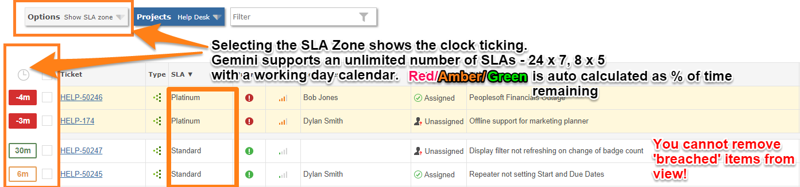
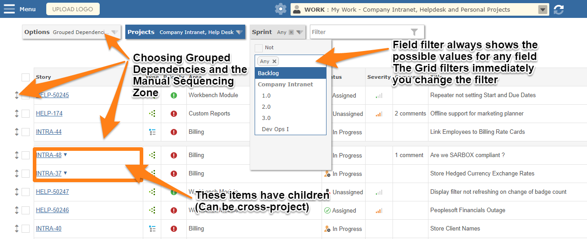
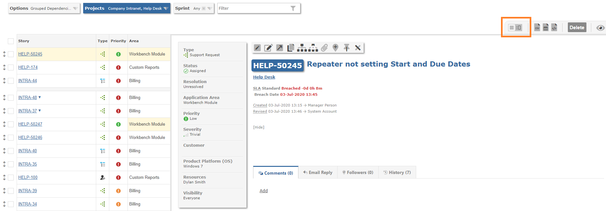

The items grid lists all items that match the search filter.
The display options on the left of the project filter give a number of views. Shown below are the SLA and Sequenze Zones as well as Grouped Dependencies

The following capabilities are available:
Important If you group dependencies, Gemini will show the parent item if any of its children match the filter, even if the parent itself does not.

You can choose the traditional grid view or the split view, your preference will be saved with your Workspace.
